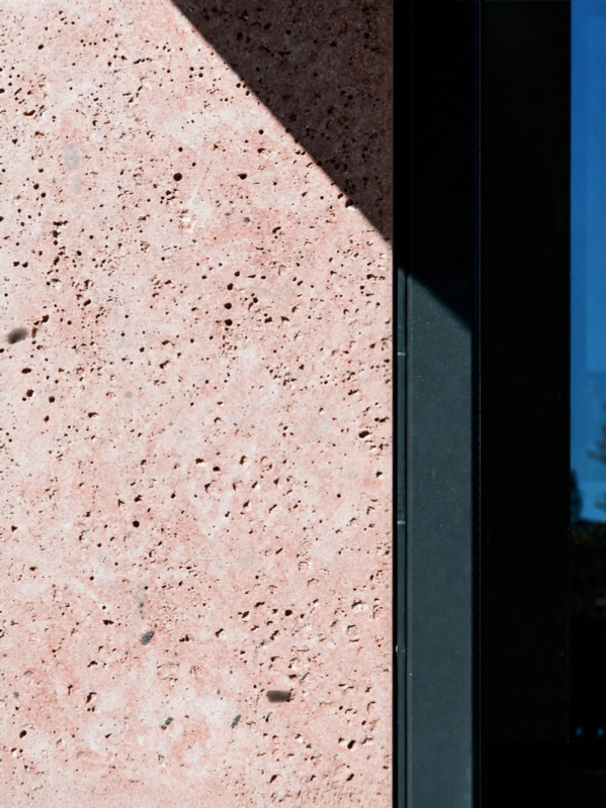
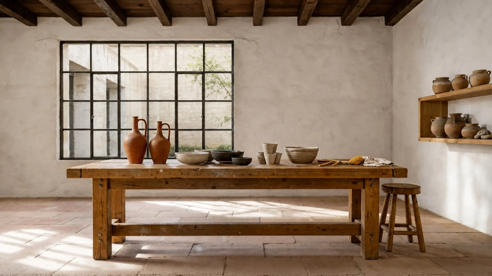
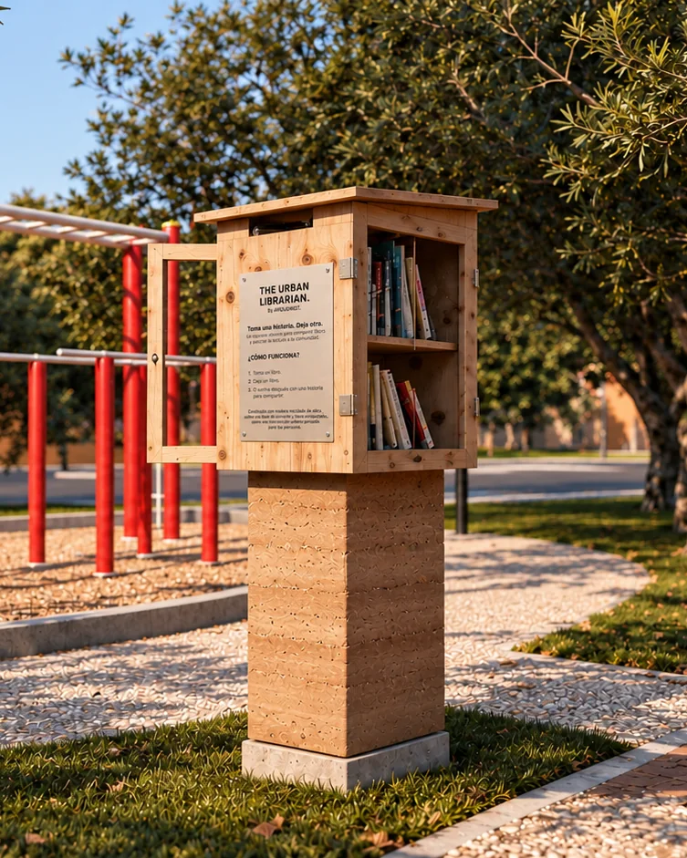

Ejemplo ficticio — solo para mostrar el diseño
Taller Cantera
Un antiguo patio de servicio convertido en taller para una ceramista, en el Centro Histórico.

- Tipo
- Taller de artista
- Ubicación
- Centro Histórico, Querétaro
- Año
- 2025
- Superficie
- 120 m²
- Estado
- Construido
- Proceso
Idea
Se conservaron los muros de cantera rosa del patio y se añadió un volumen ligero de concreto con un gran ventanal de acero que lleva la luz del norte al espacio de trabajo.
El patio se convirtió en antesala: un camino de losas entre agaves conduce del portón al taller.

Transformación
De la idea a la materia. Desliza para comparar el render con la obra construida desde el mismo punto de vista.
 Render
Obra
Render
Obra
Materia

